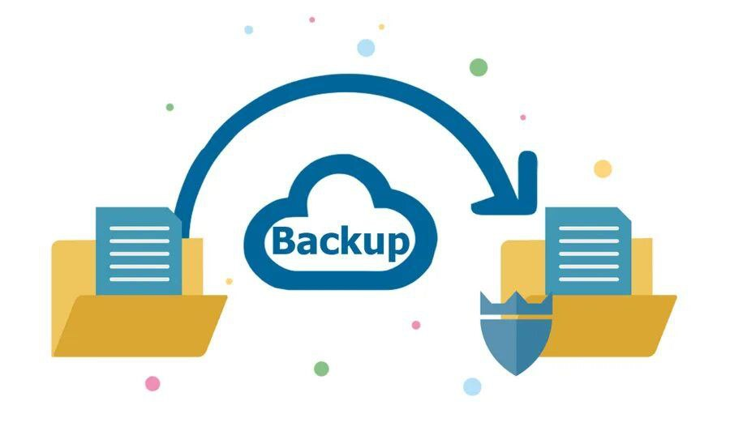

Урок 8. Резервное копирование

Что такое резервное копирование
Бэкап(резервные копии)- создание копий важных данных для их восстановления при потере или повреждении.
Пример: копия фотографий на Google Диск, iCloud или флешке.
Зачем оно нужно❗
Поломка устройства.
Случайное удаление файлов.
Вирусы-шифровальщики.
Кража или потеря телефона/ноутбука.
Виды резервного копирования
Полное-
копируются все данные.
Инкрементное-
копируются только новые/изменённые файлы.
Дифференциальное-
копируются изменения с момента последнего полного бэкапа.
Где хранить резервные копии
Облако: Google Диск, OneDrive, iCloud, Dropbox.
Внешние накопители: флешки, внешние жёсткие диски.
NAS-серверы: домашние сетевые диски (для продвинутых пользователей).
Правило 3-2-1.📌
3 копии данных (оригинал + 2 копии).
2 разных носителя (например, компьютер + облако).
1 копия вне дома (чтобы пожар/кража не уничтожили всё).
Задание 1
Перетащи карточки в правильный столбик:
плюсы
и
минусы
.
Плюсы (+)
Минусы (−)
Карточки
Доступ из любого места
Риск взлома
Возможность утечки данных
Совместная работа
Резервное копирование
Автоматическое сохранение
Экономия памяти
Зависимость от интернета
Проверить
Сбросить
Задание 2
Соотнеси верные пары.
Перетащи буквы к подходящему определению:
A. Облачное хранилище
B. Google Диск
C. Резервное копирование
D. Пароль
E. Интернет
1. Интернет-сервис для хранения данных на удалённых серверах
2. Один из популярных сервисов облачного хранения
3. Сохранение копий файлов на случай их потери
4. Средство защиты доступа к данным
5. Необходим для доступа к облаку
Проверить
Сбросить
Тест
1. Что значит «бэкап»?
Копия данных
Удаление данных
Вирус
Новая программа
2. Зачем нужны резервные копии?
Для красоты
Чтобы восстановить данные
Чтобы освободить память
Чтобы ускорить интернет
3. Где хранить бэкапы?
Только на том же диске
В памяти телефона
В мессенджерах
В облаке
4. Как часто делать бэкапы?
Никогда
Регулярно
Раз в 10 лет
Раз в день
5. Что нельзя хранить в одном месте?
Пароли
Все копии
Игры
Фото
6. Чем опасно отсутствие бэкапа?
Потерей данных
Ускорением компьютера
Долгой загрузкой
Шумом
7. Что лучше: один бэкап или несколько?
Один
Несколько
Неважно
Нет разницы
8. Что значит «облачное хранение»?
Данные в интернете
Данные в облаках
Данные в телефоне
Данные в книге
9. Как проверить бэкап?
Попробовать восстановить
Игнорировать
Удалить
Спросить у друзей
10. Что важно при резервировании?
Безопасность
Красивый вид
Цвет папки
Размер файла
11. Что лучше для личных фото?
Чат
Облако
Один компьютер
Бумажный лист
12. Что значит «инкрементный бэкап»?
Сохраняет только изменения
Удаляет старое
Копирует всё
Стирает данные
Проверить результат
Перейти далее